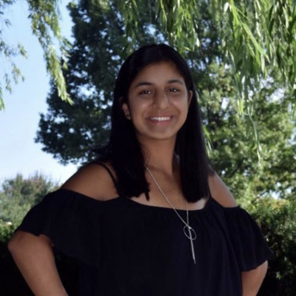
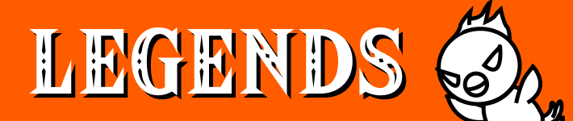
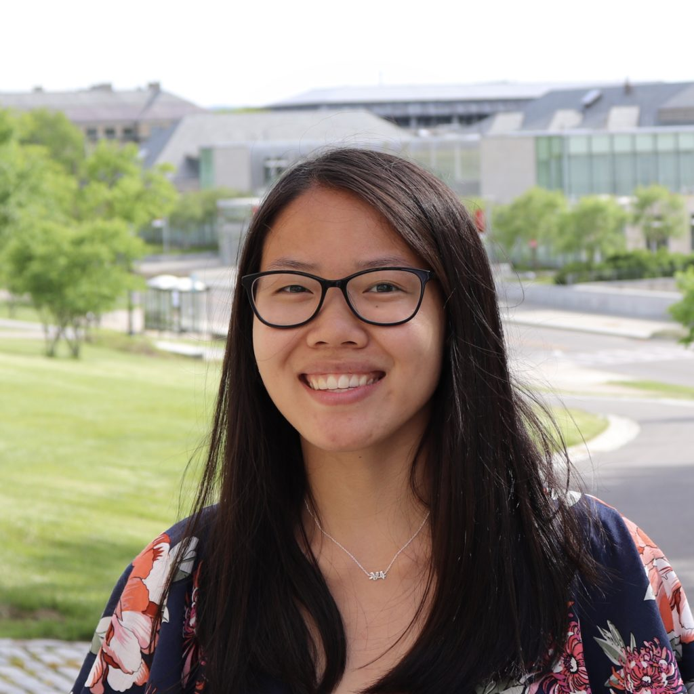
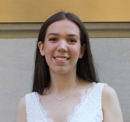
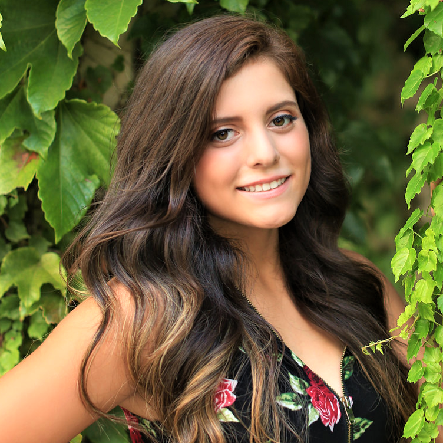
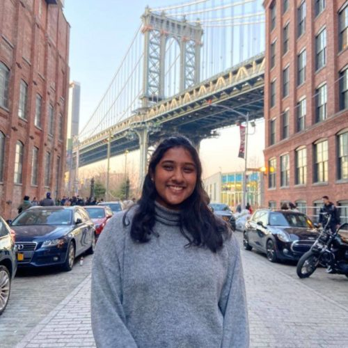
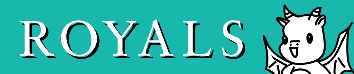
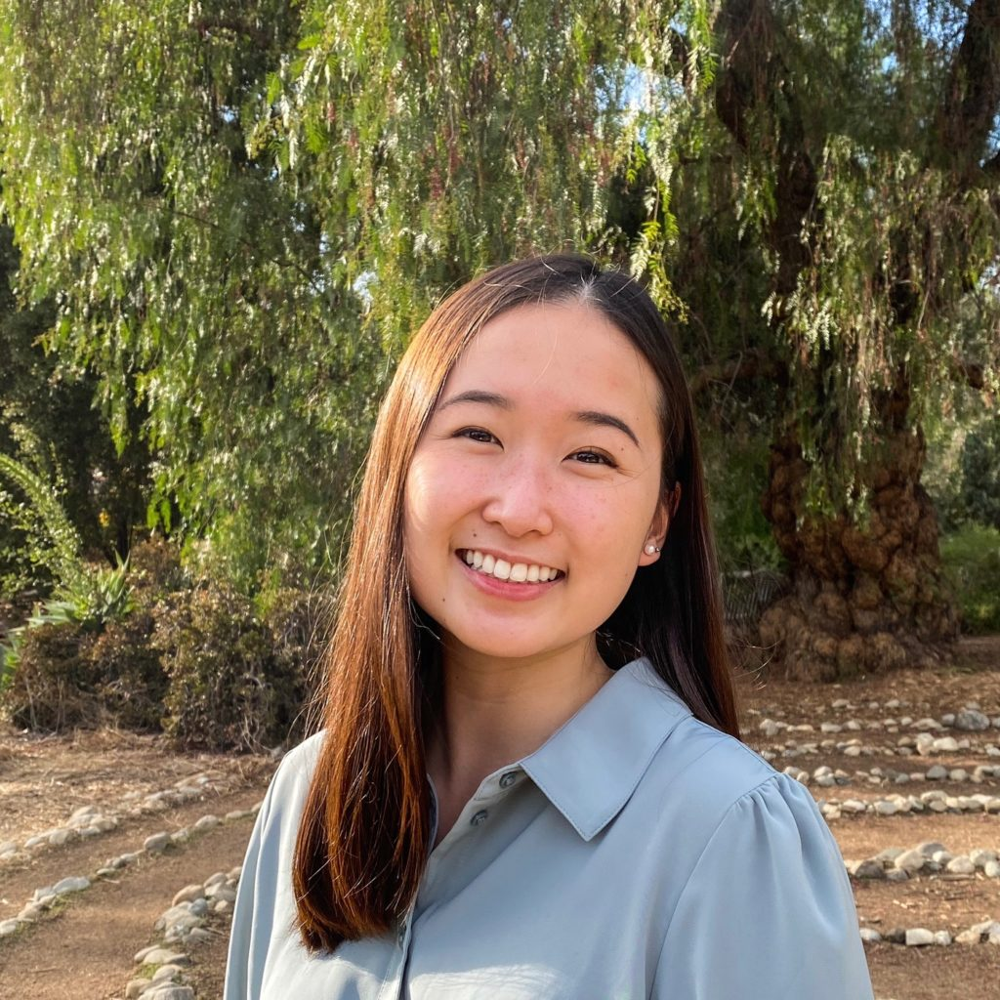

To promote closer ties and a stronger sense of community in a brotherhood of over 400 members, lineages are divided into families, each with their own unique traditions and quirks. For many pledges, finding out their big’s identity and learning which family they belong to is a highlight of the pledging period.
Marvels Fam
Marvels is a tight-knit, social family with a special love for pizza bagels, banana pudding, and food fellowships! Our family service cause is prison reform. #marvelsassemble
Hi, I’m Ava and I’m from Queens, NY! I’m a junior biology major, and recently I’ve picked up skateboarding as a new hobby!

Simran Surtani
Treasurer
Simran Surtani
Treasurer
I'm a sophomore global & public health major from Cleveland. I love writing and making very niche playlists. Super excited to meet you!
Legends Fam

Legends are the newest kids on the block but some of the coolest members of APO. Descendants of the Olympian gods of years past, we excel at leading, serving, and all around have a good time with others! #FLYPHERN
I’m a junior majoring in Biometry & Statistics from Centerport, NY. I like plants, hiking, origami, and rock climbing.#flyPhern

Summer Hardy
Chapter Relations Chair
Summer Hardy
Chapter Relations Chair
I'm a sophomore bio & society major (info sci minor) from Boulder, Colorado! I love geese, boba, mountains, and of course APO! 🙂
Supers Fam
The Supers welcome you to the biography of the reigning Family Wars Champions. You may not know our super alter egos, but we have a weakness: chocolate covered pretzels. If you ever need a hug, our mascot Baemax is here for you. #withgreatpower
Hi! I’m a senior in ILR from CA. I love service, kittens, and bubble tea. Please reach out 🙂

Sarah Addison
Fellowship Assistant
Sarah Addison
Fellowship Assistant
I’m a sophomore biology major from NYC. I love animals, 70s music, and thrifting. Look forward to virtually meeting everyone this semester!
Incredibles Fam
While the Incredibles Family may not wear super suits on campus, we can always be seen kicking butt in our natural habitat, whether we’re excelling in class, chilling at CTB or just being all around awesome. #nocapes
I’m a sophomore biology and economics major from Long Island, NY. I love coffee and boba. #NOCAPES

Bella Nevarez
Diversity and Inclusion Chair
Bella Nevarez
Diversity and Inclusion Chair
Hi! I’m a sophomore Biological Sciences major from Dallas, TX. I love traveling, dogs, & Tiktok. I’m always excited to meet new people! ❤
Guardians Fam
Guardians love to have fun and enjoy each other’s company. Although few in number, we have the strongest presence and we literally hold the keys to success. #GUARDUP
Hi! I'm Tara. I am a sophomore Hotelie, from Buffalo, NY. I really like going on adventures and discovering new places. #GUARDUP

Charu Murugesan
Philanthropy Chair
Charus Murugesan
Philanthropy Chair
I'm a junior computer science major from California. I can't wait to meet everyone and plan some amazing events to raise money for CHAM.
Royals Fam

Ring pops on fingers, and smiles on faces; see us at all of your favorite places; happiness and friendship, Queens and Kings; these are a few of our favorite things! Being part of the Royals Family will be your crowning achievement. #crownsnotfrowns
Hi! I’m a freshman studying HBHS from LI, NY. I love dogs, coffee, and the beach.

Cristie Huang
Director of Public Relations
Cristie Huang
Director of Public Relations
I'm a junior Information Science major from LA! I love baking cakes, drinking iced coffee, and meeting new people 🙂
Jenkins Fam
We are one of AΦΩ’s smallest families, but don’t let our size fool you. We’ve got personalities so blinding we have to wear sunglasses at all times. Bound by secrecy, the Jenkins clan can say no more. #RollJenkins